Initial Updog Fits
David Gerard
April 25, 2017
Abstract
I run the bias-modeling updog on the alfalfa data.
Subset Data
obj <- readRDS(file = "../output/allele_counts/chr1_ct.RDS")
str(obj)## List of 2
## $ A: num [1:62076, 1:412] 5 5 5 5 5 5 5 5 5 5 ...
## ..- attr(*, "dimnames")=List of 2
## .. ..$ : chr [1:62076] "S1_6617" "S1_6634" "S1_6640" "S1_6641" ...
## .. ..$ : chr [1:412] "DM3.1:SRR1266111:7:124151" "DM3.10:SRR1586329:6:123939" "DM3.11:SRR1586330:1:124045" "DM3.12:SRR1586330:1:124046" ...
## $ a: num [1:62076, 1:412] 0 0 0 0 0 0 0 0 0 0 ...
## ..- attr(*, "dimnames")=List of 2
## .. ..$ : chr [1:62076] "S1_6617" "S1_6634" "S1_6640" "S1_6641" ...
## .. ..$ : chr [1:412] "DM3.1:SRR1266111:7:124151" "DM3.10:SRR1586329:6:123939" "DM3.11:SRR1586330:1:124045" "DM3.12:SRR1586330:1:124046" ...I will choose SNP’s that are at various levels of total read-counts.
suppressMessages(library(tidyverse))
med_counts <- apply(obj$A + obj$a, 1, median, na.rm = TRUE)
mean_counts <- rowMeans(obj$A + obj$a, na.rm = TRUE)
quants <- quantile(mean_counts, probs = seq(0, 1, length = 30), na.rm = TRUE)
match_vec <- match(round(quants, digits = 1), round(mean_counts, digits = 1))
sub_A <- obj$A[match_vec, ]
sub_a <- obj$a[match_vec, ]For the smaller counts alleles, most of the samples don’t have any read-counts (indicated by NA) (though, this isn’t a guarantee).
plot(rowMeans(is.na(sub_a)), type = "l")
plot(rowMeans(is.na(sub_A)), type = "l")
Raw Plots
First, some plots of the maximum expressed variants
library(updog)
ploidy <- 4
ocounts <- sub_A
osize <- sub_A + sub_a
for (index in 1:nrow(ocounts)) {
pl <- plot_geno(ocounts = ocounts[index, ], osize = osize[index, ],
ploidy = 4, seq_error = 0)
print(pl)
}## Warning: Removed 347 rows containing missing values (geom_point).
## Warning: Removed 298 rows containing missing values (geom_point).## Warning: Removed 329 rows containing missing values (geom_point).## Warning: Removed 275 rows containing missing values (geom_point).## Warning: Removed 299 rows containing missing values (geom_point).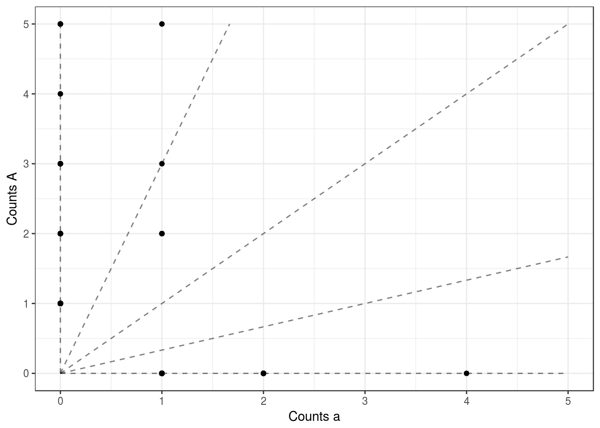
## Warning: Removed 299 rows containing missing values (geom_point).
## Warning: Removed 341 rows containing missing values (geom_point).
## Warning: Removed 209 rows containing missing values (geom_point).
## Warning: Removed 264 rows containing missing values (geom_point).
## Warning: Removed 202 rows containing missing values (geom_point).
## Warning: Removed 114 rows containing missing values (geom_point).
## Warning: Removed 321 rows containing missing values (geom_point).
## Warning: Removed 217 rows containing missing values (geom_point).## Warning: Removed 226 rows containing missing values (geom_point).## Warning: Removed 68 rows containing missing values (geom_point).
## Warning: Removed 59 rows containing missing values (geom_point).## Warning: Removed 47 rows containing missing values (geom_point).## Warning: Removed 132 rows containing missing values (geom_point).
## Warning: Removed 62 rows containing missing values (geom_point).
## Warning: Removed 17 rows containing missing values (geom_point).
## Warning: Removed 8 rows containing missing values (geom_point).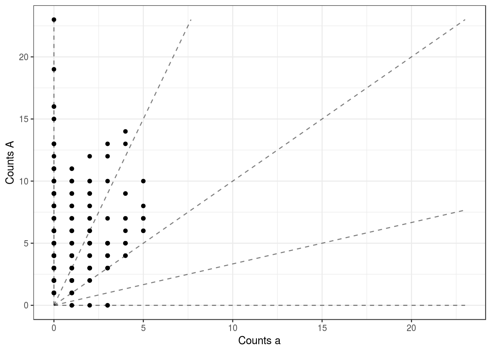
## Warning: Removed 49 rows containing missing values (geom_point).
## Warning: Removed 6 rows containing missing values (geom_point).## Warning: Removed 27 rows containing missing values (geom_point).
## Warning: Removed 32 rows containing missing values (geom_point).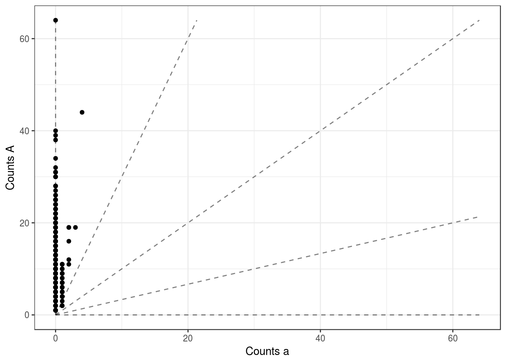
This last SNP makes no sense. Why are they all clustered at 0.75? Is this a technical artifact? This would only make sense biologically if segregation happened in pairs. E.g. if the parental genotypes were AAAA and ABAB and AB have to cluster together in the second parent. If they all segregated independently, then you would expect to see some AABB’s and some AAAA’s. This is weird.
An alternative explanation is an extreme sequencing error rate combined with an extreme mapping bias toward the non-reference allele. This is what updog_vanilla catches.
uout <- updog_vanilla(ocounts = ocounts[nrow(ocounts), ], osize = osize[nrow(osize), ],
ploidy = 4)
plot(uout, ask = FALSE)Some of these don’t look too bad!
for (index in 20:29) {
ocounts_nona <- ocounts[index, ]
ocounts_nona <- ocounts_nona[!is.na(ocounts_nona)]
osize_nona <- osize[index, ]
osize_nona <- osize_nona[!is.na(osize_nona)]
uout <- updog_vanilla(ocounts = ocounts_nona, osize = osize_nona, ploidy = ploidy, print_val = FALSE,
update_outdisp = FALSE, update_outmean = FALSE, update_outprop = TRUE,
non_mono_max = 1)
plot(uout, ask = FALSE, plot_beta = FALSE)
print(plot_geno(ocounts = ocounts_nona, osize = osize_nona, ploidy = 4, seq_error = 0))
} 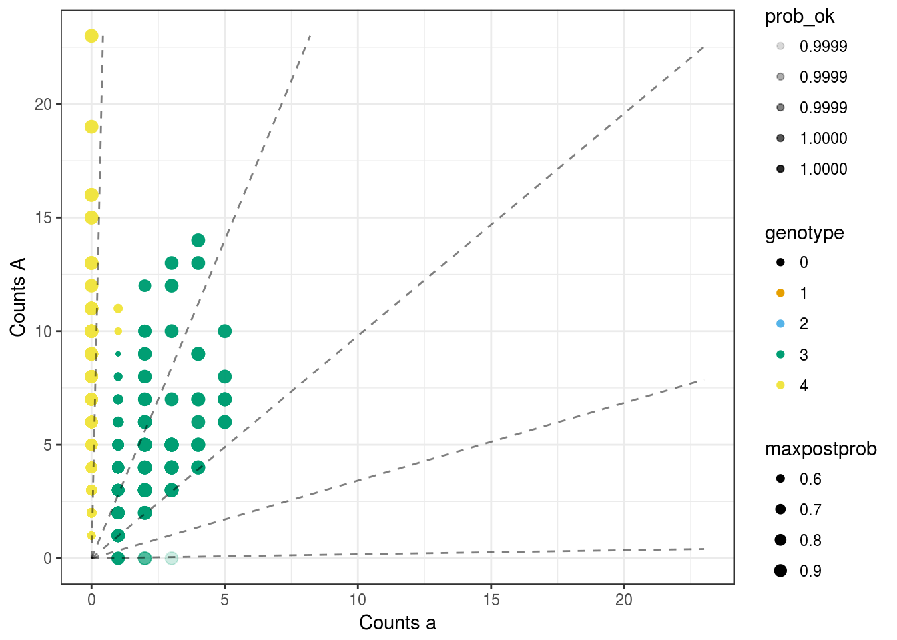
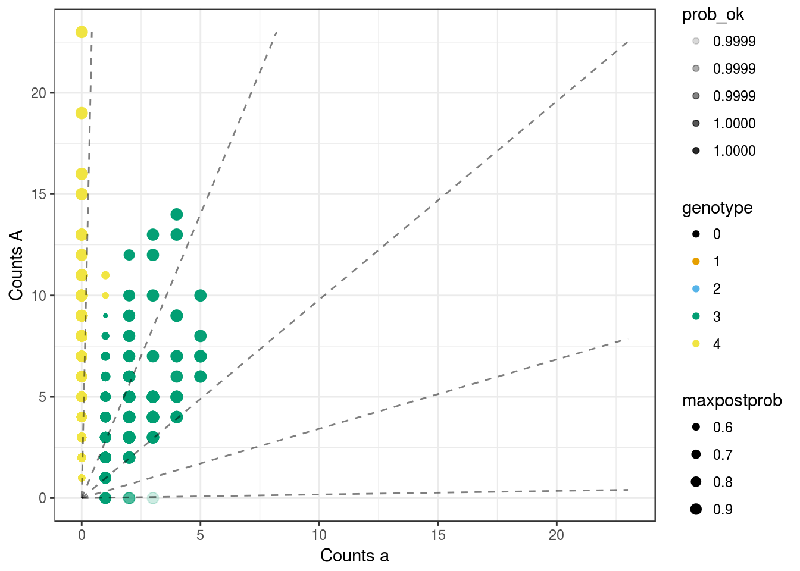

 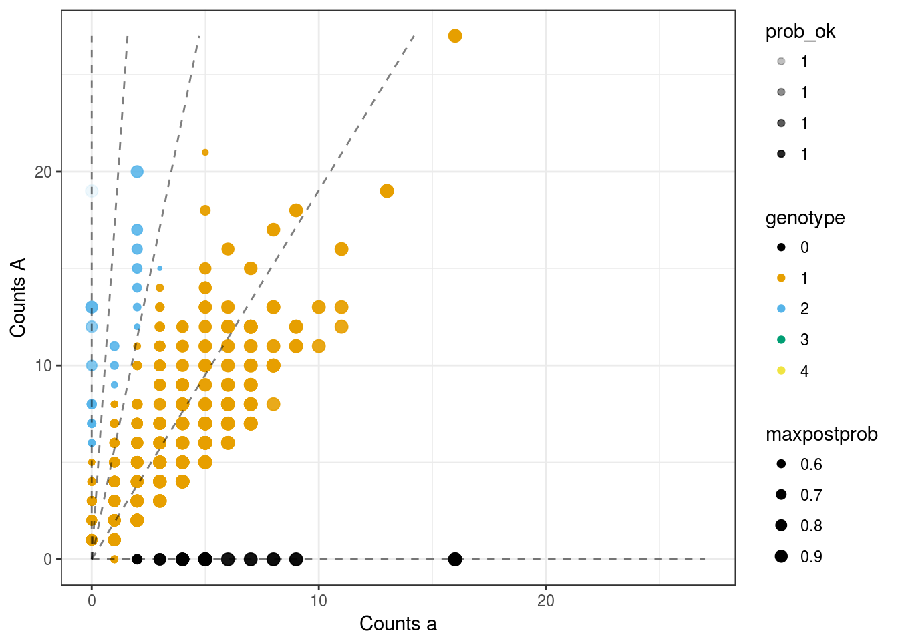
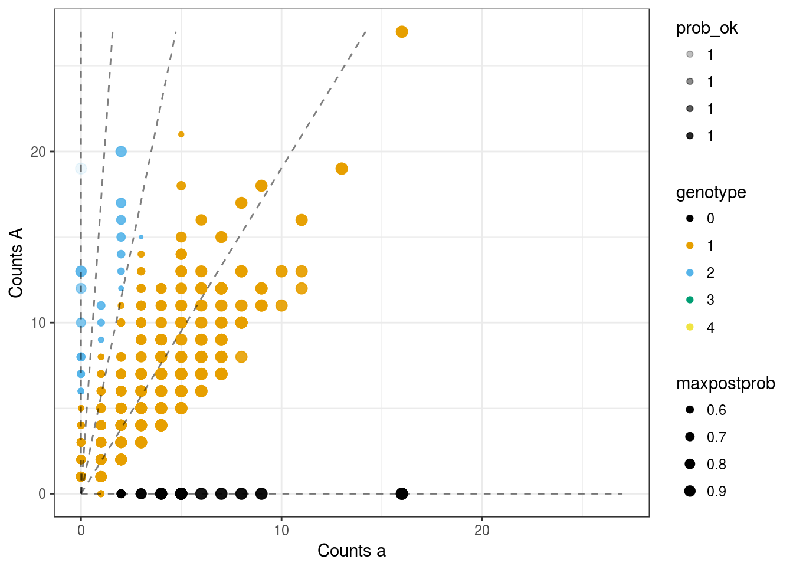 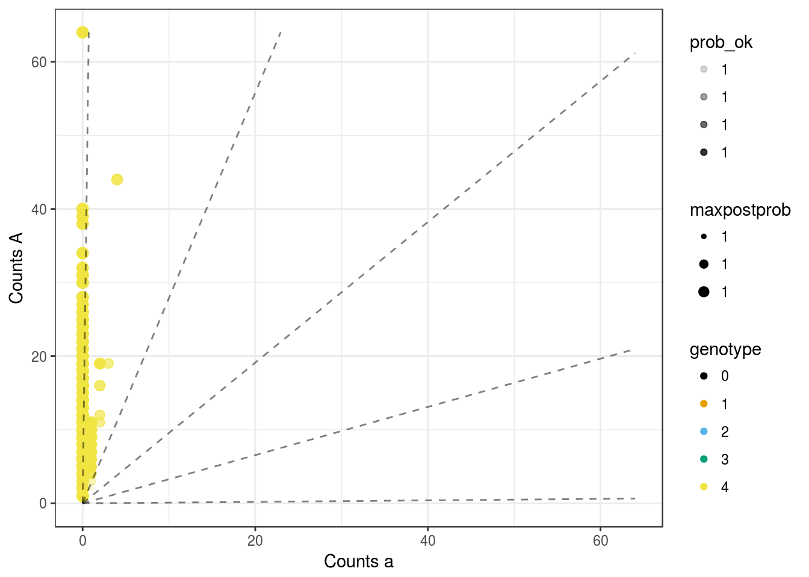
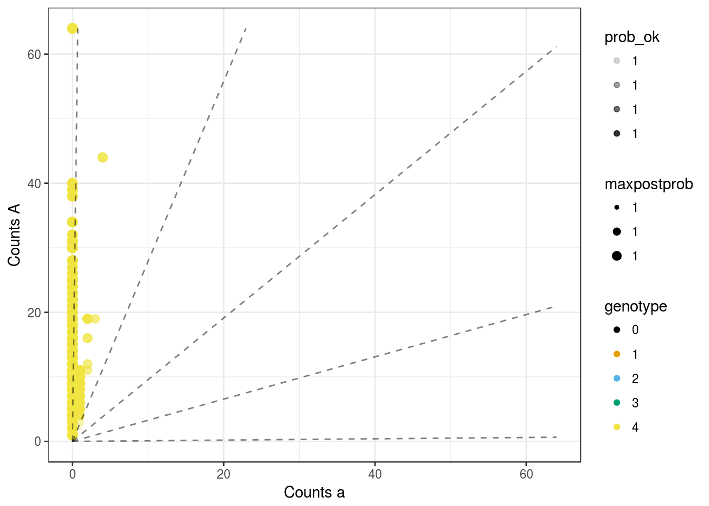 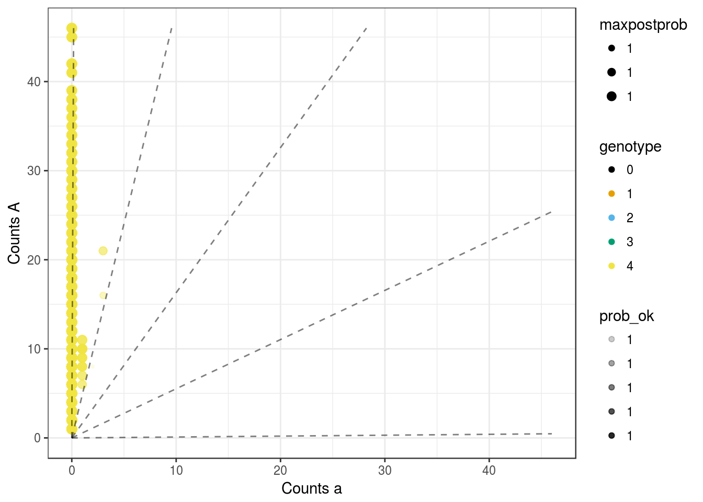
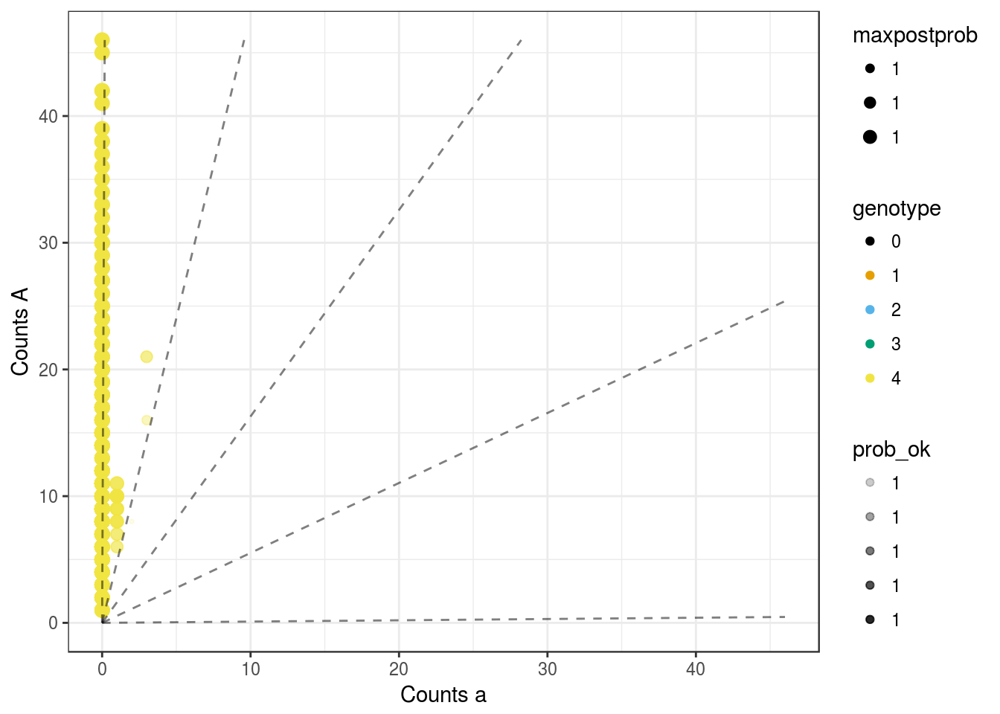 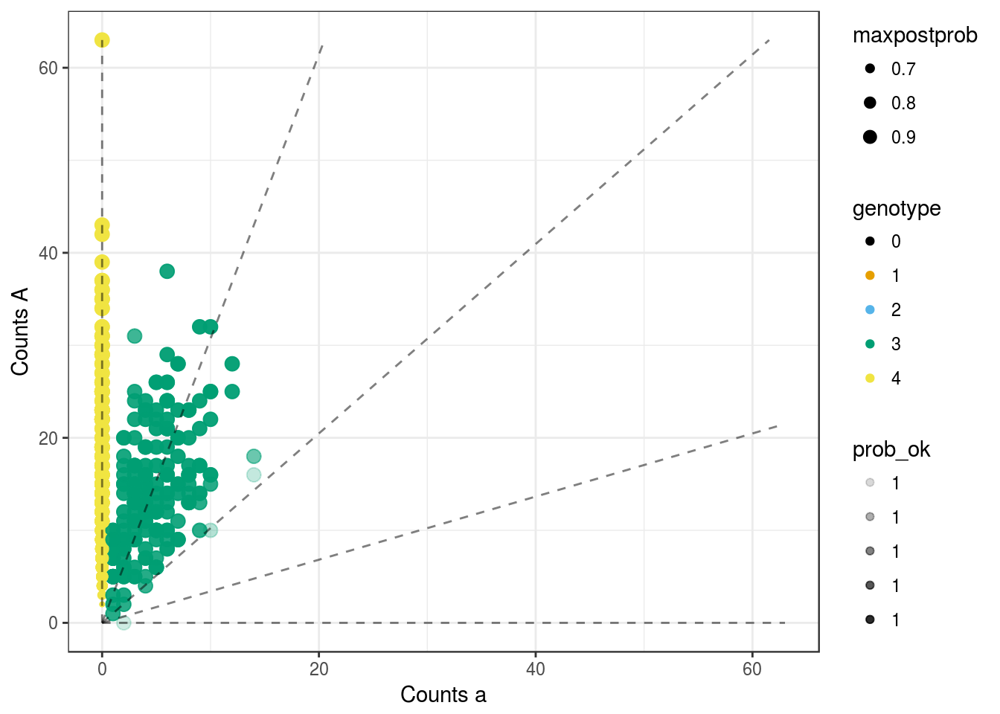
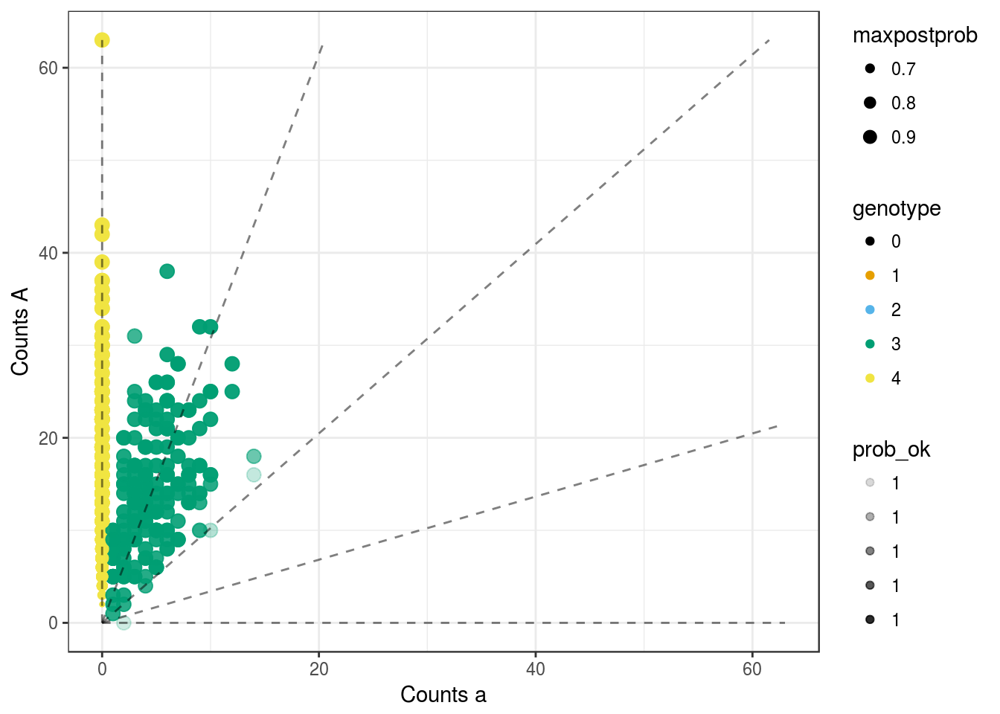

sessionInfo()## R version 3.3.2 (2016-10-31)
## Platform: x86_64-pc-linux-gnu (64-bit)
## Running under: Ubuntu 16.04.2 LTS
##
## locale:
## [1] LC_CTYPE=en_US.UTF-8 LC_NUMERIC=C
## [3] LC_TIME=en_US.UTF-8 LC_COLLATE=en_US.UTF-8
## [5] LC_MONETARY=en_US.UTF-8 LC_MESSAGES=en_US.UTF-8
## [7] LC_PAPER=en_US.UTF-8 LC_NAME=C
## [9] LC_ADDRESS=C LC_TELEPHONE=C
## [11] LC_MEASUREMENT=en_US.UTF-8 LC_IDENTIFICATION=C
##
## attached base packages:
## [1] stats graphics grDevices utils datasets methods base
##
## other attached packages:
## [1] updog_0.1.0 dplyr_0.5.0 purrr_0.2.2 readr_1.0.0
## [5] tidyr_0.6.1 tibble_1.2 ggplot2_2.2.1 tidyverse_1.1.1
##
## loaded via a namespace (and not attached):
## [1] Rcpp_0.12.10 plyr_1.8.4 forcats_0.2.0 tools_3.3.2
## [5] digest_0.6.12 jsonlite_1.3 lubridate_1.6.0 evaluate_0.10
## [9] nlme_3.1-131 gtable_0.2.0 lattice_0.20-34 psych_1.6.12
## [13] DBI_0.6 yaml_2.1.14 parallel_3.3.2 haven_1.0.0
## [17] xml2_1.1.1 stringr_1.2.0 httr_1.2.1 knitr_1.15.1
## [21] hms_0.3 rprojroot_1.2 grid_3.3.2 R6_2.2.0
## [25] readxl_0.1.1 foreign_0.8-67 rmarkdown_1.3 modelr_0.1.0
## [29] reshape2_1.4.2 magrittr_1.5 codetools_0.2-15 backports_1.0.5
## [33] scales_0.4.1 htmltools_0.3.5 rvest_0.3.2 assertthat_0.2.0
## [37] mnormt_1.5-5 colorspace_1.3-2 labeling_0.3 stringi_1.1.2
## [41] lazyeval_0.2.0 munsell_0.4.3 broom_0.4.2This R Markdown site was created with workflowr